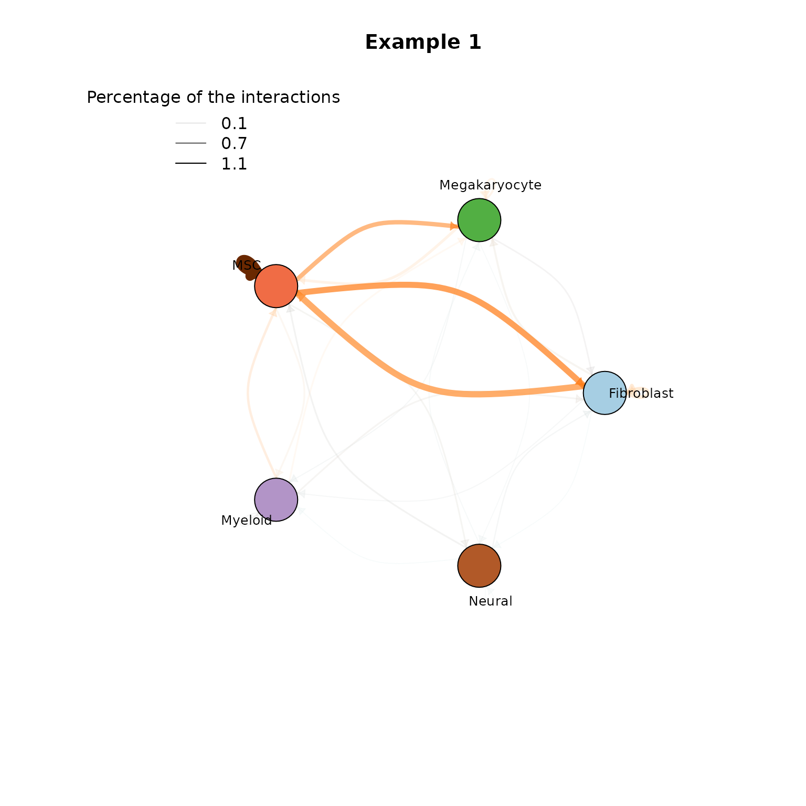

CrossTalkeR Cookbook
James S. Nagai
Institute for Computational Genomics, Faculty of Medicine, RWTH Aachen University, Aachen, 52074 GermanyVanessa Klöker
Institute for Computational Genomics, Faculty of Medicine, RWTH Aachen University, Aachen, 52074 GermanyIvan G. Costa
Institute for Computational Genomics, Faculty of Medicine, RWTH Aachen University, Aachen, 52074 GermanySource:
vignettes/CrossTalkeR.Rmd
CrossTalkeR.RmdVersion Info
## Warning: replacing previous import 'dplyr::as_data_frame' by
## 'igraph::as_data_frame' when loading 'CrossTalkeR'## Warning: replacing previous import 'dplyr::groups' by 'igraph::groups' when
## loading 'CrossTalkeR'## Warning: replacing previous import 'clusterProfiler::simplify' by
## 'igraph::simplify' when loading 'CrossTalkeR'## Warning: replacing previous import 'dplyr::union' by 'igraph::union' when
## loading 'CrossTalkeR'## Warning: replacing previous import 'igraph::as_data_frame' by
## 'tibble::as_data_frame' when loading 'CrossTalkeR'## Warning: replacing previous import 'assertthat::has_name' by 'tibble::has_name'
## when loading 'CrossTalkeR'## Warning: replacing previous import 'igraph::crossing' by 'tidyr::crossing' when
## loading 'CrossTalkeR'
suppressPackageStartupMessages({require(igraph)})
suppressPackageStartupMessages({require(ggraph)})
suppressPackageStartupMessages({require(ggplot2)})R version: R version 4.3.1 (2023-06-16)
Package version: 1.4.0
Generate Report Example
In our vignette we provide examples on how to analyse cell interactions from a human myelofibrosis single cell RNA-seq dataset.
paths <- c('CTR' = system.file("extdata",
"CTR_LR.csv",
package = "CrossTalkeR"),
'EXP' = system.file("extdata",
"EXP_LR.csv",
package = "CrossTalkeR"))
genes <- c('TGFB1|L')
output <- system.file("extdata", package = "CrossTalkeR")
data <- generate_report(paths,
genes,
out_path=paste0(output,'/'),
threshold=0,
out_file = 'vignettes_example.html',
output_fmt = "html_document",
report = TRUE)Individual Visualization
CCI
plot_cci(graph = data@graphs$CTR,
colors = data@colors,
plt_name = 'Example 1',
coords = data@coords[V(data@graphs$CTR)$name,],
emax = NULL,
leg = FALSE,
low = 0,
high = 0,
ignore_alpha = FALSE,
log = FALSE,
efactor = 8,
vfactor = 12)
Sankey plot
plot_sankey(lrobj_tbl = data@tables$EXP_x_CTR,
target = c("TGFB1|L"),
ligand_cluster = NULL,
receptor_cluster = NULL,
plt_name = "TGFB1")
Session information
## R version 4.3.1 (2023-06-16)
## Platform: x86_64-pc-linux-gnu (64-bit)
## Running under: Ubuntu 22.04.3 LTS
##
## Matrix products: default
## BLAS: /usr/lib/x86_64-linux-gnu/blas/libblas.so.3.10.0
## LAPACK: /usr/lib/x86_64-linux-gnu/lapack/liblapack.so.3.10.0
##
## locale:
## [1] LC_CTYPE=en_US.UTF-8 LC_NUMERIC=C
## [3] LC_TIME=de_DE.UTF-8 LC_COLLATE=en_US.UTF-8
## [5] LC_MONETARY=de_DE.UTF-8 LC_MESSAGES=en_US.UTF-8
## [7] LC_PAPER=de_DE.UTF-8 LC_NAME=C
## [9] LC_ADDRESS=C LC_TELEPHONE=C
## [11] LC_MEASUREMENT=de_DE.UTF-8 LC_IDENTIFICATION=C
##
## time zone: Europe/Berlin
## tzcode source: system (glibc)
##
## attached base packages:
## [1] grid stats graphics grDevices utils datasets methods
## [8] base
##
## other attached packages:
## [1] knitr_1.43 colorBlindness_0.1.9 extrafont_0.19
## [4] pals_1.7 graphlayouts_1.0.0 ggrepel_0.9.3
## [7] DT_0.28 ComplexHeatmap_2.16.0 factoextra_1.0.7
## [10] patchwork_1.1.2 stringr_1.5.0 tidyr_1.3.0
## [13] tibble_3.2.1 dplyr_1.1.2 ggraph_2.1.0
## [16] ggplot2_3.4.2 igraph_1.5.0.1 CrossTalkeR_1.4.0
##
## loaded via a namespace (and not attached):
## [1] splines_4.3.1 bitops_1.0-7 ggplotify_0.1.1
## [4] polyclip_1.10-4 lifecycle_1.0.3 rstatix_0.7.2
## [7] doParallel_1.0.17 rprojroot_2.0.3 lattice_0.21-9
## [10] MASS_7.3-60 crosstalk_1.2.0 backports_1.4.1
## [13] magrittr_2.0.3 sass_0.4.7 rmarkdown_2.23
## [16] jquerylib_0.1.4 yaml_2.3.7 mapproj_1.2.11
## [19] cowplot_1.1.1 DBI_1.1.3 RColorBrewer_1.1-3
## [22] maps_3.4.1 abind_1.4-5 zlibbioc_1.46.0
## [25] purrr_1.0.1 BiocGenerics_0.46.0 RCurl_1.98-1.12
## [28] yulab.utils_0.0.6 tweenr_2.0.2 circlize_0.4.15
## [31] GenomeInfoDbData_1.2.10 IRanges_2.34.1 S4Vectors_0.38.1
## [34] enrichplot_1.20.0 tidytree_0.4.4 pkgdown_2.0.7
## [37] codetools_0.2-19 DOSE_3.26.1 ggforce_0.4.1
## [40] tidyselect_1.2.0 shape_1.4.6 aplot_0.1.10
## [43] farver_2.1.1 viridis_0.6.4 matrixStats_1.0.0
## [46] stats4_4.3.1 jsonlite_1.8.7 GetoptLong_1.0.5
## [49] ellipsis_0.3.2 tidygraph_1.2.3 ggalluvial_0.12.5
## [52] iterators_1.0.14 systemfonts_1.0.4 foreach_1.5.2
## [55] tools_4.3.1 treeio_1.24.3 ragg_1.2.5
## [58] sna_2.7-1 Rcpp_1.0.11 glue_1.6.2
## [61] Rttf2pt1_1.3.12 gridExtra_2.3 xfun_0.39
## [64] qvalue_2.32.0 GenomeInfoDb_1.36.1 withr_2.5.0
## [67] fastmap_1.1.1 boot_1.3-28.1 fansi_1.0.4
## [70] SparseM_1.81 digest_0.6.33 networkLite_1.0.5
## [73] R6_2.5.1 mime_0.12 gridGraphics_0.5-1
## [76] textshaping_0.3.6 colorspace_2.1-0 Cairo_1.6-0
## [79] GO.db_3.17.0 dichromat_2.0-0.1 RSQLite_2.3.1
## [82] utf8_1.2.3 generics_0.1.3 data.table_1.14.8
## [85] httr_1.4.6 htmlwidgets_1.6.2 scatterpie_0.2.1
## [88] org.Mm.eg.db_3.17.0 pkgconfig_2.0.3 gtable_0.3.3
## [91] blob_1.2.4 networkDynamic_0.11.3 XVector_0.40.0
## [94] clusterProfiler_4.8.2 shadowtext_0.1.2 htmltools_0.5.5
## [97] carData_3.0-5 fgsea_1.26.0 clue_0.3-64
## [100] scales_1.2.1 Biobase_2.60.0 png_0.1-8
## [103] ggfun_0.1.1 reshape2_1.4.4 rjson_0.2.21
## [106] coda_0.19-4 statnet.common_4.9.0 nlme_3.1-163
## [109] org.Hs.eg.db_3.17.0 cachem_1.0.8 GlobalOptions_0.1.2
## [112] parallel_4.3.1 HDO.db_0.99.1 AnnotationDbi_1.62.2
## [115] desc_1.4.2 pillar_1.9.0 vctrs_0.6.3
## [118] ggpubr_0.6.0 car_3.1-2 cluster_2.1.4
## [121] extrafontdb_1.0 netdiffuseR_1.22.5 evaluate_0.21
## [124] magick_2.7.5 cli_3.6.1 compiler_4.3.1
## [127] rlang_1.1.1 crayon_1.5.2 MatchIt_4.5.4
## [130] ggsignif_0.6.4 labeling_0.4.2 plyr_1.8.8
## [133] fs_1.6.3 stringi_1.7.12 viridisLite_0.4.2
## [136] network_1.18.1 BiocParallel_1.34.2 assertthat_0.2.1
## [139] munsell_0.5.0 Biostrings_2.68.1 lazyeval_0.2.2
## [142] GOSemSim_2.26.1 Matrix_1.5-1 bit64_4.0.5
## [145] KEGGREST_1.40.0 highr_0.10 gsw_1.1-1
## [148] broom_1.0.5 memoise_2.0.1 oce_1.8-1
## [151] bslib_0.5.0 ggtree_3.8.2 fastmatch_1.1-3
## [154] bit_4.0.5 downloader_0.4 ape_5.7-1
## [157] gson_0.1.0